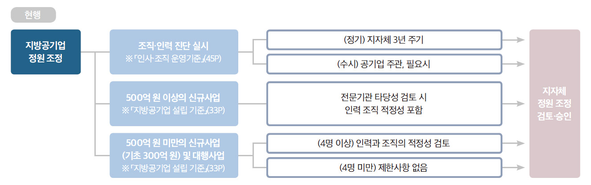
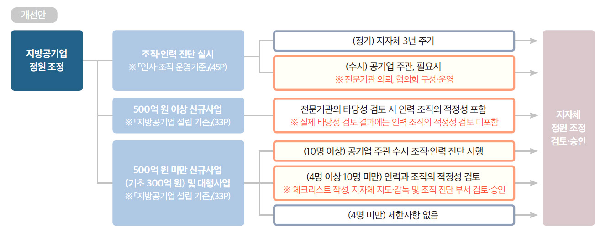
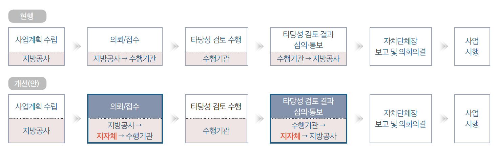

「지방공기법」 제1조에는 “지방자치단체가 직접 설치·경영하거나 법인을 설립하여 경영하는 기업의 운영에 필요한 사항을 정하여 그 경영을 합리화함으로써 지방자치의 발전과 주민복리의 증진에 이바지함을 목적으로 한다.”라고 규정되어 있다. 지방공기업 사업은 지방자치 발전과 주민복지 증진과 함께해야 한다는 것이다. 그러므로 본 고에서는 지금까지 지방공기업 관련한 제도 운영 과정에서 지방자치단체와 지방자치단체가 설립한 지방공기업의 상생 발전을 도모하고 투명성·효율성·책임성을 제고하기 위한 방안으로 「지방공기업 설립 기준」과 「지방공기업 인사·조직 운영기준」 등 몇 가지 개정 사항에 대하여 정책적 제언을 하고자 한다.
「지방공기업 설립 기준」 개정안
「지방공기업 설립 기준」(2021.3.23. 시행)에 따르면 설립 운영 기준의 목적은 ① 지방공기업의 남설 및 방만 경영에 대한 사전 통제 장치 미비에 따른 제도적 보완 대책 차원의 설립 및 운영 기준을 마련, ② 지방공기업의 중복 설립 방지를 통한 지방재정 부담의 경감 및 건전한 운영 도모를 목적으로 운영되고 있다. 주요 내용으로는 지방공기업 설립 기준, 설립 절차, 설립 단계별 세부 검토 기준 등을 포함하고 있다.
동 「지방공기업 설립 기준」(33p)에는 500억 원 미만의 신규 사업, 대행사업 중 정원 4명 이상 증가 시 ‘인력과 조직의 적정성’을 검토하도록 규정되어 있다. 그러나 ① 적정성 검토 방법이 구체적이지 않아 정원조정이 지연되는 사례, 즉 지방공기업 주관의 조직진단 또는 3년 주기로 실시되는 지방자치단체 주관의 조직진단 후 정원이 반영되고 있는 상황이다.
또한 ② 정원 4명 이상 증원 시 지방공기업의 조직 및 인력 규모의 종합적 판단이 필요하나, 지방자치단체의 사업부서에서는 지방공기업의 전체적인 인력 사항에 대한 검토보다는 개별사업의 목적 달성 및 성과 위주로 검토함에 따라 지방공기업 조직의 비대화가 우려되고 있다.
이러한 문제점을 개선하고자 다음과 같이 정책 개선을 제언하고자 한다. 정원 증가인원별 적정성 검토를 세분화하여 실시하는 방안이다. 먼저 정원 4명 이상에서 10명 미만으로 증가하는 경우에는 ① 지방공기업에서 ‘체크리스트’를 작성해 자체 검토 및 검증을 실시하고 ② 지방자치단체의 정원 조정 승인 시에는 ‘체크리스트’ 결과를 활용해 승인 검토(지방자치단체 지도・감독 및 공기업 관리 총괄부서 병행)하는 것이다.
또한 10명 이상 증가한 경우 지방공기업의 주관하에 수시 조직・인력 진단을 시행하여 증원의 필요성을 세부적이고 종합적으로 검토하는 것이다. 단, 지방공기업의 주관으로 전문기관에 의뢰하는 경우에도 지방자치단체, 외부자문단 등이 포함된 협의회를 구성・운영하여 시행 과정에서 소통과 협업을 통해 효율적으로 추진하는 방안이다.
[예시 1] 인력 적정성 검토 체크리스트
분야
적정성 검토 항목
자체 검토 결과
적정성 여부
사업 적정성
신규, 대행사업 추진 필요성
사업 지속 가능성(사업기간, 대행사업 재위탁 가능성 등)
인력 분석
사업 종료 후 인력관리 계획
정기 조직 진단(3년 주기) 전 정원 조정 필요성
타 기관 동일 사업 인력 비교
일몰사업 인력 활용 가능성(사업기간 前後)
정원 외 인력 활용 가능성(기간제 근로자 등)
조직 분석
조직 효율화를 통한 자체 인력 활용 가능성
인력 증원에 따른 조직 운영계획 수립
：
：
：
：
[표 1]「지방공기업 설립 기준」의 현행과 개정안
현행
개정(안)
■ 「지방공기업 설립 기준」(33p)
- 총사업비 기준으로 광역자치단체가 설립한 공사가 500억 원 미만, 시군구가 설립한 공사가 300억 원 미만의 신규 투자 사업을 실시하는 경우, 「지방공기업법」 제65조의3 제2항에 따라 신규 투자 사업 타당성 검토 대상에서 제외된 경우, 「지방공기업법」 제71조와 제76조에 따른 공사 또는 공단의 대행사업의 경우에는 전문기관의 타당성 검토를 거치지 않아도 되나, 다음 사항에 대한 검토가 필요
- 시장성 테스트 [별첨 3-1], 인력과 조직의 적정성(정원이 4명 이상 증가하는 경우)
■ 「지방공기업 설립 기준」(33p)
- 총사업비 기준으로 광역자치단체가 설립한 공사가 500억 원 미만, 시군구가 설립한 공사가 300억 원 미만의 신규투자 사업을 실시하는 경우, 「지방공기업법」 제65조의3 제2항에 따라 신규 투자 사업 타당성 검토 대상에서 제외된 경우, 「지방공기업법」 제71조와 제76조에 따른 공사 또는 공단의 대행사업의 경우에는 전문기관의 타당성 검토를 거치지 않아도 되나, 다음 사항에 대한 검토가 필요
- 시장성 테스트 [별첨 3-1]
- 인력과 조직의 적정성(정원이 4명 이상 10명 미만 증가하는 경우) [별첨○] ※ 인력과 조직의 적정성 검토는 자치단체 지도·감독 및 조직진단 담당부서 검토·승인 필요, 정원 10명 이상 증가하는 경우 공기업 주관 조직진단 실시
「지방공기업 인사·조직 운영기준」 개정안
「지방공기업 인사·조직 운영기준」은 지방공기업의 인사·조직 운영에 관한 기준을 정함으로써 합리적이고 공정한 인사·조직 관리를 목적으로 △임원의 인사, △직원의 인사, △비정규직 관리, △조직, 성과 중심의 조직·인력관리, △투명한 윤리경영의 제도화, △상생 차원의 신노사문화 정착 등의 주요 내용을 담고 있다.
동 「지방공기업 인사·조직 운영기준」(45p)에 따라 해당 기관의 조직・정원 조정이 필요한 경우 ‘공기업 주관 조직 진단’을 할 수 있도록 되어 있다. 그러나 ① ‘공기업 주관’과 ‘지자체 주관’의 조직 진단 결과가 상이하여 합리적 판단 어려움, ‘공기업 주관 조직진단’의 경우 조사 방법, 절차 등에 있어 신뢰성이 저하되는 현상이 발생하고 있다.
또한 ② 지방공기업 주관으로 시행하는 인력 증원을 전제로 하는 조직 진단의 이행 방법이 모호하여 구체화가 필요하다는 것이다. 이를 개선하기 위하여 지방공기업 주관으로 실시하는 조직 진단의 경우 ‘협의회 구성·운영’ 또는 ‘전문기관’을 지정하여 시행하는 방안을 검토해야 한다. 그 실행 방안으로 지방공기업이 주관하는 조직진단 시행의 구체화 및 검증을 강화하고, 지방공기업의 주관하에 조직진단 시 전문기관 의뢰, 협의회 구성・운영 등에 있어 절차적으로 정당성을 의무화하는 방안을 검토해야 한다.
[표 2] [단기] 조직 진단 협의회 구성・운영
현행
개정(안)
■ 「지방공기업 인사·조직 운영기준」(45p)
- 조직진단 실시 : 당해 공기업 주관 진단은 조직 또는 정원 조정이 필요한 경우에 실시, 자치단체 주관 진단은 3년 주기로 실시
■ 「지방공기업 인사·조직 운영기준」(45p)
- 조직진단 실시 : 당해 공기업 주관 진단은 조직 또는 정원 조정이 필요한 경우에 전문기관에 의뢰하여 실시하고 지자체 등과 협의회 구성·운영, 자치단체 주관 진단은 3년 주기로 실시
※ 공기업 주관 조직진단 협의회 구성
•대상 : 자치단체(지도·감독 및 조직진단 담당부서), 공기업, 외부자문단, 과업수행자
•운영 시기 : 과업착수, 중간보고, 최종보고
•역할 : 용역추진 방향, 분석방법 등 협의 조정 및 용역 반영
[표 3] [장기] 조직 진단 전문기관 지정
현행
개정(안)
■ 「지방공기업 인사·조직 운영기준」(45p)
- 조직 진단 실시 : 당해 공기업 주관 진단은 조직 또는 정원 조정이 필요한 경우에 실시, 자치단체 주관 진단은 3년 주기로 실시
■ 「지방공기업 인사·조직 운영기준」(45p)
- 조직진단 실시 : 당해 공기업 주관 진단은 조직 또는 정원 조정이 필요한 경우 지정 전문기관에서 실시, 자치단체 주관 진단은 3년 주기로 실시
※ 지정 전문기관 : 00평가원, 00연구원
예) 지방공기업평가원, 시·도 연구원, 시·도 공공투자관리센터 등
[예시 2] A 공기업의 조직 진단의 이행 사례
A 공기업사례
(’16년) 공기업 주관진단 ‘58명 증’ → (’18년) 지자체 진단 ‘2명 감’ → (’19년) 공기업 자체 진단 ‘58명 증’
[예시 3] 제도 개선 방안


신규사업(출자) 타당성 검토 절차 개선(안)

‘지방공기업의 신규사업 타당성’ 검토 절차 개선
지방공기업이 신규로 투자사업(광역공사 500억 원, 기초공사 300억 원 이상)을 시행하는 경우에는 지방공기업 제65조의3에 따라 전문기관의 타당성 검토와 지방자치단체장의 보고 및 지방의회 의결을 의무화하고 있다. 그러나 지방공기업에서 신규사업 타당성 검토 의뢰 시 지방자치단체 협의 절차 없이 전문기관(지방공기업평가원, LIMAC 등)에 직접 의뢰하여 실시되고 있다.
이는 자칫 전문기관의 타당성을 검토한 후 지방자치단체의 판단에 따라 사업 필요성이 낮거나 및 지방공기업의 부채관리 영향 등을 고려하여 사업 추진이 불가 결정되는 경우 전문기관의 타당성 검토를 완료한 후에 사업이 중단되면서 발생하는 비용 부담(용역비용 매몰)이 발생할 수 있다.
그러므로 지방공기업에서 타당성 검토 의뢰 및 검토 결과에 대한 과정에서 지방자치단체를 경유하게 되면 시행착오를 줄일 수 있을 것이다. 참고로 「지방재정법」 제37조에 따라 시행하는 지방재정 타당성 조사(총사업비 500억 원 이상)의 경우 사업 추진 사업부서에서 신청하여 광역시, 도의 재정총괄 부서와 행정안전부를 경유하여 타당성 조사 전문기관(LIMAC 등)에 의뢰하는 시스템으로 절차적 과정을 일원화하여 운영하고 있다.
이상으로 「지방공기업의 설립 기준」 및 「지방공기업 인사·조직 운영기준」 개정안을 중심으로 지방공기업의 투명성·효율성·책임성 제고 방안에 대하여 살펴보았다.
필자는 2013년부터 2년여 동안 행정안전부 공기업 부서에서 지방공기업법령 및 제도 운영 과정에서 전국 지방자치단체 공무원 및 지방공기업 임직원, 노동조합의 다양한 의견을 경영평가 지표 및 제도에 반영하는 과정을 경험한 바 있다. 2019년 이후 현재까지 지방자치단체에서 지방공기업 및 출자·출연을 총괄하는 현장 업무를 맡고 있다.
위에서 제시한 개선 내용은 지방공기업 관련 제도의 설계 및 실제 운영 과정에서 필요한 현장의 목소리를 담은 것이다. 이는 궁극적으로 지방자치단체 및 지방공기업 관련한 제도적인 절차를 합리적인 개선을 통해 상생 발전을 도모하자는 것이다. 앞으로도 지방공기업이 건전한 발전을 통해 지역 주민의 신뢰와 사랑을 받은 기관으로 지속할 수 있도록 최선의 노력을 다하고자 한다.